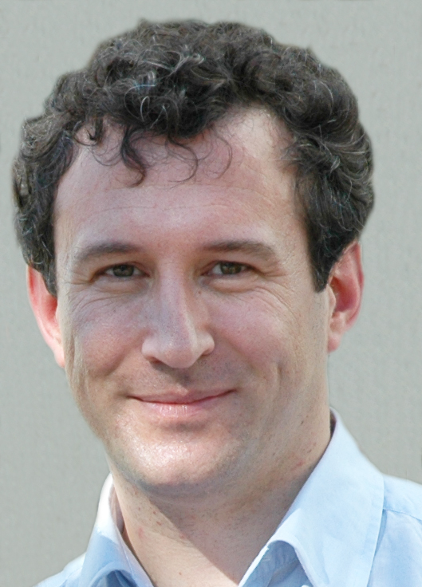

Stefan Resmerita
|  |
|
Department of Computer
Science University of Salzburg Jakob-Haringer-Str. 2, A-5020 Salzburg, Austria Phone: +43-662-8044-6406 Fax: +1-253-369-5458 E-mail: stefan dot resmerita at cs.uni-salzburg.at
|
|||||||
| Short bio | |
| Stefan Resmerita is an Associate Professor at the University of Salzburg, Austria. He received his B.Sc. and M.Sc. degrees in Electrical Engineering from the Technical University of Iasi, Romania. He obtained a Ph.D. degree in Computer Science from the Technion-Israel Institute of Technology. He was a teaching and research assistant at the Department of Automatic Control and Industrial Informatics, Technical University of Iasi, and at the Department of Computer Science, the Technion. He was a research associate at the Institute for Pervasive Computing, University of Linz, Austria. He occupied a postdoctoral position at the EECS Department, University of California at Berkeley. He was a visiting researcher at NASA Ames Research Center, Moffet Field, California. Since 2007 he has been spending several months per year as a visiting researcher at the Toyota Technical Center in Los Angeles and Ann Arbor, USA. | |
| List of publications (pdf) | |
| Current Teaching (Winter 2016) | |
| Software Engineering | |
| Software Praktikum | |
| Parallel Programming | Software Systems |
| Family | |
| My page on the Software Research Group site | |